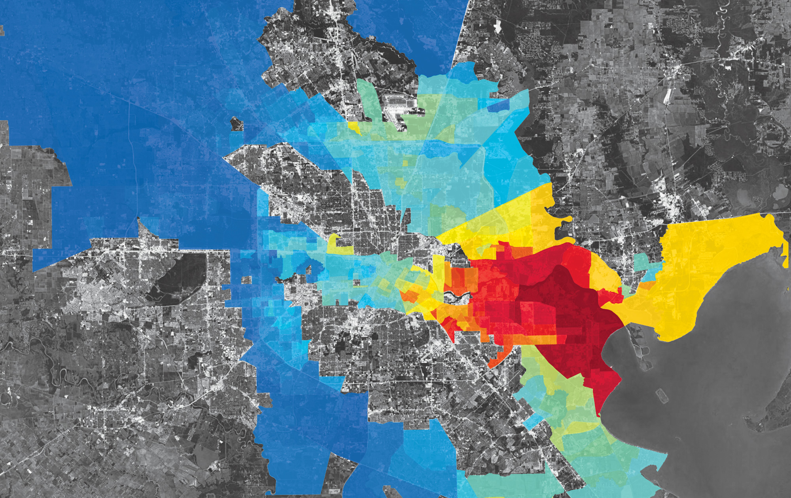

<!DOCTYPE html>
<html lang="en">
<head>
    <meta charset="UTF-8">
    <meta name="viewport" content="width=device-width, initial-scale=1.0">
    <title>Document</title>

    <link href="css/gaiaInterface.css" rel="stylesheet">

    <link rel="stylesheet" href="includes/leaflet/leaflet.css"/>

    <script src="includes/leaflet/leaflet.js"></script>
</head>
<body>
        <div id="map"></div>

        <script>
            let map = L.map('map').setView([51.505, -0.09], 13);

            L.tileLayer('https://tile.openstreetmap.org/{z}/{x}/{y}.png', {
                maxZoom: 19,
                attribution: '&copy; <a href="http://www.openstreetmap.org/copyright">OpenStreetMap</a>'
            }).addTo(map);

            let plantIcon = L.icon({
                iconUrl: 'includes/leaflet/images/plantmarker.png',
                shadowUrl: 'includes/leaflet/images/plantmarker-shadow.png',

                iconSize:     [94, 251], // size of the icon
                shadowSize:   [129, 74], // size of the shadow
                iconAnchor:   [42, 238], // point of the icon which will correspond to marker's location
                shadowAnchor: [4, 62],  // the same for the shadow
                popupAnchor:  [-3, -76] // point from which the popup should open relative to the iconAnchor
            });

            L.marker([51.917252, 4.484179], {icon: plantIcon}).addTo(map);
        </script>

<!--    -->

    <footer class="gaia-seed-links">
        <div class="gaia-seed-div">
            
            <a href="seedScan.html">SCAN</a>
        </div>
        <div class="gaia-seed-div">
            
            <a href="seedMap.html">MAP</a>
        </div>
        <div class="gaia-seed-div">
            
            <a href="seedHistory.html">HISTORY</a>
        </div>
    </footer>
</body>
</html>